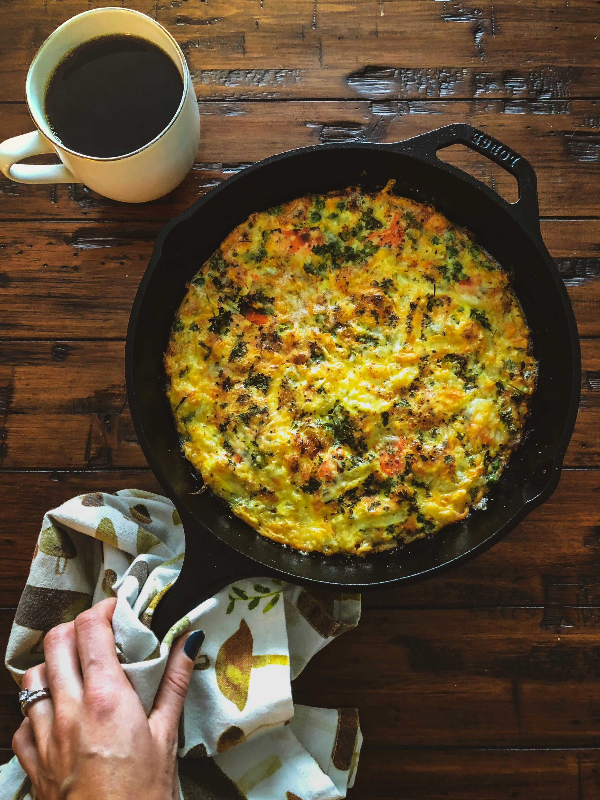

Simple & Delicious Fritatta

Photo by Kristina Gain
Description
This fritatta is perfect for breakfast, lunch, or dinner. Packed with protein and easily paired with veggies or potatoes, this quick recipe will be a go-to throughout your week.
Ingredients
- 3 eggs
- 1/2 cup heavy cream or half and half
- 1 1/2 tsp cumin powder
- 1/4 smoked paprika (for sprinkling over the top)
- Salt to taste
Steps to Prepare
- Preheat oven to 375°F.
- Combine eggs, heavy cream, cumin, and salt in an oven-safe dish.
- Whisk ingredients together. The more air you incorporate during this step, the fluffier your fritatta will be.
- Sprinkle smoked paprika over the top of the mixture.
- Bake at 375°F for 17-20 minutes. Bake times may vary.
- The fritatta is done when it is light, fluffy, and cooked all the way through. Serve immediately.
HOME